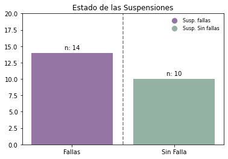

ETL & EDA#
Extraer, Transformar y Cargar (ETL)#
Los datos fueron suministrados por CARBONES COLOMBIANOS DEL CERREJON SAS. Estos fueron recibidos mediante un “.zip” el cual contenia 18 archivos “.csv” correspondientes a los datos de ambas suspensiones traseras (Derecha e izquierda) de cada camion. Con el siguiente codigo pudimos combinar cada unos de los “.csv” en un solo DataFrame.
import os
import pandas as pd
def identify_delimiter(file_path):
"""Identifica si el archivo CSV usa coma o punto y coma como delimitador."""
with open(file_path, 'r', encoding='utf-8') as file:
first_line = file.readline()
if ',' in first_line:
return ','
elif ';' in first_line:
return ';'
else:
return None # No se encontró un delimitador claro
# Ruta de la carpeta donde están los archivos CSV
folder_path = os.path.expanduser('/Users/user/Library/CloudStorage/OneDrive-UniversidaddelNorte/Noveno semestre/TESIS DE GRADO/Mario liñan')
# Obtener la lista de archivos CSV en la carpeta
files = [os.path.join(folder_path, f) for f in os.listdir(folder_path) if f.endswith(".csv")]
# Identificar delimitadores para cada archivo
delimiters = {file: identify_delimiter(file) for file in files}
# Separar archivos según su delimitador
files_semicolon = [file for file, delim in delimiters.items() if delim == ';']
files_comma = [file for file, delim in delimiters.items() if delim == ',']
# Leer archivos con punto y coma como separador
df_list_semicolon = [pd.read_csv(file, sep=';', encoding='utf-8') for file in files_semicolon]
# Leer archivos con coma como separador
df_list_comma = [pd.read_csv(file, sep=',', encoding='utf-8') for file in files_comma]
# Combinar todos los dataframes
df_semicolon = pd.concat(df_list_semicolon, ignore_index=True) if df_list_semicolon else pd.DataFrame()
df_comma = pd.concat(df_list_comma, ignore_index=True) if df_list_comma else pd.DataFrame()
dfcamiones = pd.concat([df_semicolon, df_comma], ignore_index=True)
# Convertir la columna AdjustedReadTime a formato datetime si existe en el dataframe
if 'AdjustedReadTime' in dfcamiones.columns:
dfcamiones['AdjustedReadTime'] = pd.to_datetime(dfcamiones['AdjustedReadTime'], format='%Y-%m-%d %H:%M:%S', errors='coerce')
# Mostrar las primeras filas
display(dfcamiones.head(10))
---------------------------------------------------------------------------
ModuleNotFoundError Traceback (most recent call last)
Cell In[1], line 2
1 import os
----> 2 import pandas as pd
4 def identify_delimiter(file_path):
5 """Identifica si el archivo CSV usa coma o punto y coma como delimitador."""
ModuleNotFoundError: No module named 'pandas'
Una vez unificado el DataFrame, procedemos al analisis de los datos para poder encontrar patrones e informacion relevante para la investigacion.
Analisis Exploratorio de Datos (EDA)#
Este documento presenta un análisis del comportamiento de las presiones en los camiones Hitachi EH5000. Se analizarán un total de 12 camiones, cada uno de los cuales está equipado con dos suspensiones: la suspensión derecha y la suspensión izquierda trasera, sumando un total de 24 suspensiones. A lo largo del análisis, se estudiará el comportamiento de las presiones a través del tiempo. Para ello, contamos con información adicional de dos variables relacionadas con la presión: el payload y la velocidad.
En los siguientes codigos, observaremos el desarrollo realizado para el analisis de la base de datos correspondiente a los datos de las suspensiones.
import numpy as np
import matplotlib.pyplot as plt
# Datos
names = ["Fallas", "Sin Falla"]
averages = [14, 10]
colors = [(0.3, 0.1, 0.4, 0.6), (0.3, 0.5, 0.4, 0.6)]
# Crear el gráfico de barras
fig, ax = plt.subplots()
bars = ax.bar(names, averages, color=colors)
# Añadir líneas de referencia
ax.axvline(x=0.5, color="grey", linestyle="--")
# Añadir texto sobre las barras
for bar, avg in zip(bars, averages):
ax.text(bar.get_x() + bar.get_width()/2, avg + 0.5, f"n: {avg}", ha='center', fontsize=10)
# Añadir título
ax.set_title("Estado de las Suspensiones")
# Añadir leyenda
legend_labels = ["Susp. fallas", "Susp. Sin fallas"]
legend_patches = [plt.Line2D([0], [0], marker='o', color='w', markersize=10, markerfacecolor=c) for c in colors]
ax.legend(legend_patches, legend_labels, loc="upper right", fontsize=8, frameon=False)
# Mostrar el gráfico
plt.ylim(0, 20)
plt.show()
